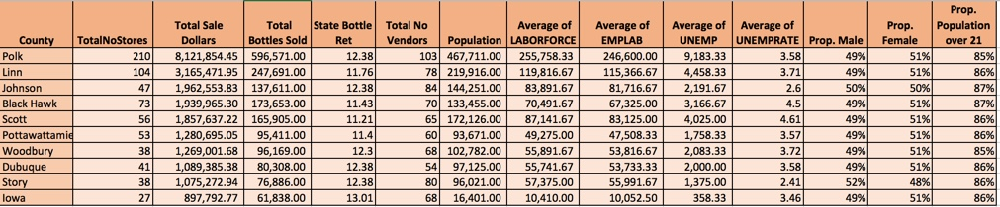

Group Members: Michael Roman, Tim Ernst, and Maria Pichardo
Overview
This week we are working with a dataset that contains transactions for all stores that have a class E liquor licensee from the state of Iowa. Based on this dataset we performed a market research for new store locations.
We added additional demographic data that the liquor sales literature suggest may lead to increase liquor sales, including: proportion of the population that's male vs. female, employment data and the proportion of the population 21 years or older.
Problem Statement
A liquor store owner in Iowa is looking to expand to new locations and has hired us to investigate the market data for potential new locations. The business owner is interested in the details of the best model you can fit to the data so that his team can evaluate potential locations for a new storefront.
The main goals for this market research are:
- Build models of total sales based on location, price per bottle, total bottles sold.
- Provide a table of the best performing stores by location type (city, county, or zip code) and the predictions of the model(s).
- Based on the models and the table of data, recommend some general locations to the business owner, taking into account model performance.
- Validate the model's performance and ability to predict future sales using cross-validation.
Dataset Description
This dataset contains the spirits purchase information of Iowa Class “E” liquor licensees by product and date of purchase. Class E liquor license, for grocery stores, liquor stores, convenience stores, etc., allows commercial establishments to sell liquor for off-premises consumption in original unopened containers.
- We will be using a reduced version of the dataset that consists of 10% of the whole. It has 270,955 rows and 18 Columns.
- The number of rows for year 2015 is 218,594
- The number of rows for year 2016 is 52,361
- The dataset contains the 4 quarters of 2015 and the first quarter of 2016
- Columns are:
- Date: Date of order
- Item Number: Item number for the individual liquor product ordered.
- Item Description: Description of the individual liquor product ordered.
- Store Number: Unique number assigned to the store who ordered the liquor.
- City: City where the store who ordered the liquor is located
- Zip Code: Zip code where the store who ordered the liquor is located
- County Number: Iowa county number for the county where store who ordered the liquor is located
- County: County where the store who ordered the liquor is located
- Category: Category code associated with the liquor ordered
- Category Name: Category of the liquor ordered.
- Vendor Number: The vendor number of the company for the brand of liquor ordered
- Item number: Item for the individual liquor product ordered.
- Item Description: Description of the individual liquor product ordered.
- Bottle Volume (ml): Volume of each liquor bottle ordered in milliliters.
- State Bottle Cost: The amount that Alcoholic Beverages Division paid for each bottle of liquor ordered
- State Bottle Retail: The amount the store paid for each bottle of liquor ordered
- Bottles Sold: The number of bottles of liquor ordered by the store
- Sale (Dollars): Total cost of liquor order (number of bottles multiplied by the state bottle retail)
- Volume Sold (Liters): Total volume of liquor ordered in liters. (i.e. (Bottle Volume (ml) x Bottles Sold)/1,000)
- Volume Sold (Gallons): Total volume of liquor ordered in gallons. (i.e. (Bottle Volume (ml) x Bottles Sold)/3785.411784)
- Columns are:
Risks and Assumptions
We are only working with the 10% version, which might not accurately reflect the behavior of the population. But it contains the complete year 2015 and the first quarter of 2016.
The sales dollars are reported from the state point of view, this amount does not represent "Actual Sales"
We are missing sales with the store margin. (With the actual store retail price) as a result we are unable to calculate profit. Considered "best performing locations" using the "Sale (Dollars)" criteria.
We assume that stores buying lots of liquor are selling a lot too but we don't know at the individual store level whether this is true at all, given the data.
We assumed the Sales Dollars amount reported is accurate. (We did a cross check with the calculated column “Total Dollar Bottle State Retail” and verified it was accurate)
Data Mining
The following new columns were created to facilitate analysis and reporting: Year, Month (segregated from Date), Total Dollar Bottle State Cost, Total Dollar Bottle State Retail, Total Tax
The following Parsing have been done to the data:
- Converted Date to date format
- Renamed the column. Eliminate blank spaces and parenthesis
- There were 1,077 null county numbers and 632 null category names. We populated the null counties with the information found in the dataset and the category names as well
- Found erroneous zipcode “'712-2” all in records for the city of ‘DUNLAP’. Replaced with correct zipcode 51529
- Converted the following columns to numeric: County Number, Category, State Bottle Cost, State Bottle Retail, Sale (Dollars)
- There were no county found in the dataset for cities: 'TABOR', 'SEYMOUR', and 'RUNNELLS' , manually updated the records with the correct county found in the internet.
- There were two different ‘County Number’ for ‘Polk’ County. Replace the less frequent used for the most one. # Unify CountyCode for Polk County df['CountyNumber'] = df['CountyNumber'].replace(25, 77)
Findings
- The most common bottle volume is 750.0 ML the next one is around 1000 ML
- The City with the most number of stores is “DES MOINES” the capital of IOWA with a total of 89 stores The County with the most stores is ‘Polk’ county’ with a total of 210 stores
- The two top zipcodes in terms of # of stores are 50320, 50314 both in Des Moines
- ZipCode 50061 has the higher average dollar tax paid with only one store in that area
Model
The predictors are: County, Total No Stores, Total Bottles Sold, Total No Vendors, and Average Laborforce
Our Target: Total Sale Dollars
R^2 = 0.99613143992353048
Lasso R^2 = 0.99613143992338105
Summary and Conclusion
At the outset, we intended to discover the features most highly correlated with liquor sales, to determine which geographic locations would be most suitable for an entrepreneur looking to build or exand their liquor franchise in Iowa. After reviewing the existing literature on the subject, we found five recurring features correlated with liquor consumption. These five features were: The density of alcohol vendors in a given neighborhood, and resultant access to alcohol, seemed to increase alcohol consumption. Economic Factors - Better economy, better booze sales. Gender - Men are more likely to binge drink than women. Age Profile - The proportion of people in the region over the U.S. legal drinking age of 21. Population Density - More people, more alcohol consumption. We appended the missing demographic data to our existing Iowa government dataset to test the correlation between these features, as well as the included features, and alcohol sales and built a linear regression model.
Recomendation
Our analysis, which was conducted at the county level, shows that the 10 Iowa counties most with the highest sales, in order, are: Polk Linn Johnson Black Hawk Scott Pottawattamie Woodbury Dubuque Story Iowa County
For an entrepreneur looking to set up shop or expand further into Iowa, these locales would be the soundest places to start. Given our model's fit with the data and the tremendously high r squared, it is very unlikely that there would be material variance in 'Sales (Dollars)' for the entrepreneur, and these 10 counties represent the top of the 'Sales (Dollars)' list.

Sources
1. Alcohol Retail Density and Demographic Predictors of Health Disparities: A Geographic Analysis>
2. Alcohol Use Patterns Among Urban and Rural Residents: Demographic and Social Influences>